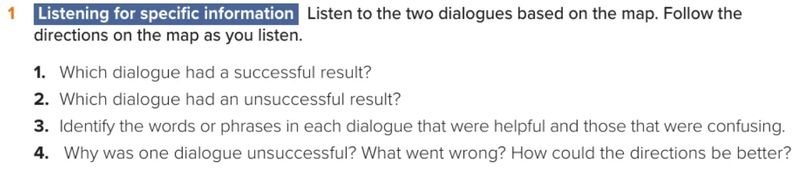
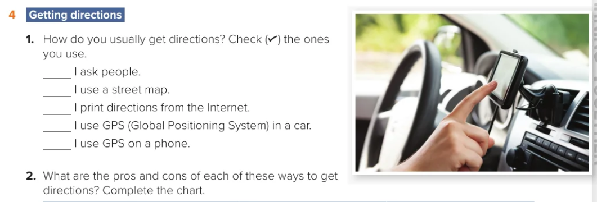

Woman 1: Hi, sorry to bother you, but (1) can you tell me where the bus station is please?
Woman 2: (2) Of course. Go straight along this road – Pacific Drive – for two blocks.
(3) Turn right at the traffic lights onto Olive Tree Road.
Woman 1: Can I (4) just check something? When I turn right after two blocks, I will be on Olive Tree Road, or is Olive Tree Road after two blocks?
Woman 2: You will be on Olive Tree Road when you turn right on the second street from here. Go along Olive Tree Road for one block and, after the shopping mall, turn left onto 24th Street. The bus station (5) is on your right, opposite a hotel and (6) next to a car park.
Woman 2: Could you (7) please explain the second part?
Woman 1: Of course. The bus station is on your right, when you are on 24th Street. There is a hotel on your left and (8) just after the bus station, there is a car park. So if you see lots of cars, but no buses, you know you have gone too far!

There is no single correct personal choice. Verify that each tick matches the student’s own experience.
| Pros | Cons | |
|---|---|---|
| Asking people | Sometimes people don’t understand me. | |
| Using a street map | ||
| Printing directions from the Internet | ||
| Using GPS in a car | ||
| Using GPS on a phone |